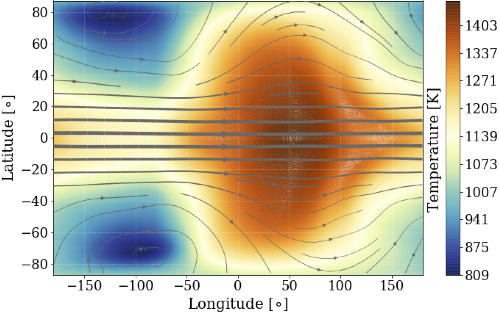

Exoplanets
I have previously explored the interface between models and observations in regards to analyzing exoplanets atmospheres. This project consisted of a combination of three-dimensional General Circulation Models (GCM) (see Rauscher & Menou 2013) and a radiative transfer scheme (see Miller-Ricci Kempton & Rauscher 2012) to create an array of model transmission spectra for the well-studied hot Jupiter, HD 189733b (HD 189), each model differing by the planet's rotation period, transit phase, and chemical composition. These models were then used to analyze observed transmission spectra of HD 189, for the first time using a 3D GCM to determine atmospheric characteristics of a hot Jupiter exoplanet (Flowers+ 2019).
Image: Cylindrical projection of the temperature and wind fields (shown here as the stream function), from the 130 mbar level, near the planet's infrared photosphere, for the synchronous rotation case (tidally locked). The substellar point (zero latitude, zero longitude) is at the center of the plot. The thickness of the vectors is a function of wind speed. This plot is showing the atmospheric structure influencing the planet’s emission. One can clearly see the standard eastward, equatorial jet, which advects the hottest region of the atmosphere to be east of the substellar point. The maximum wind speed at this level is 4.3 km/s